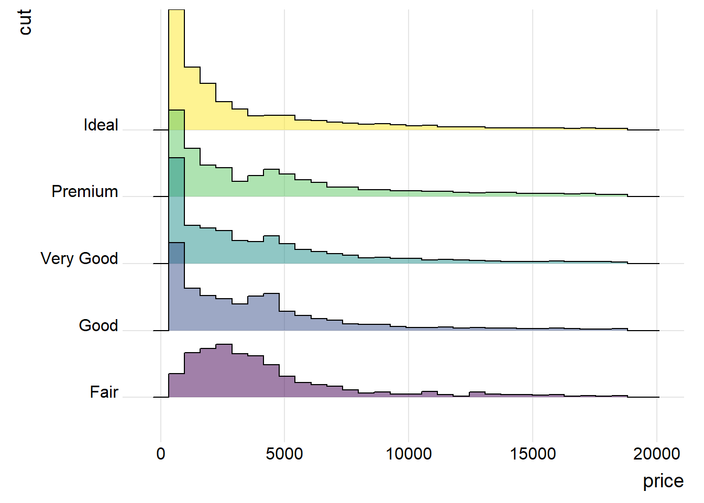
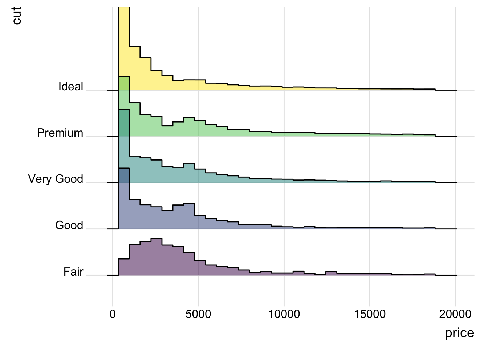
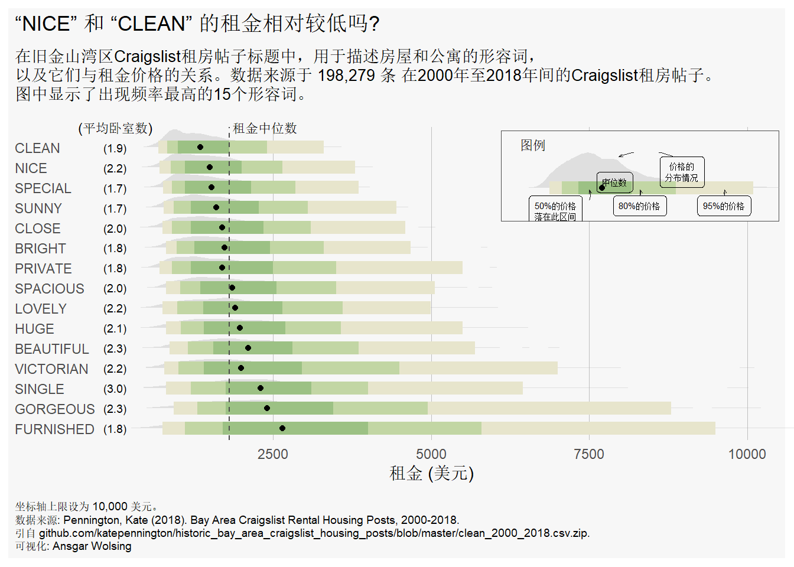
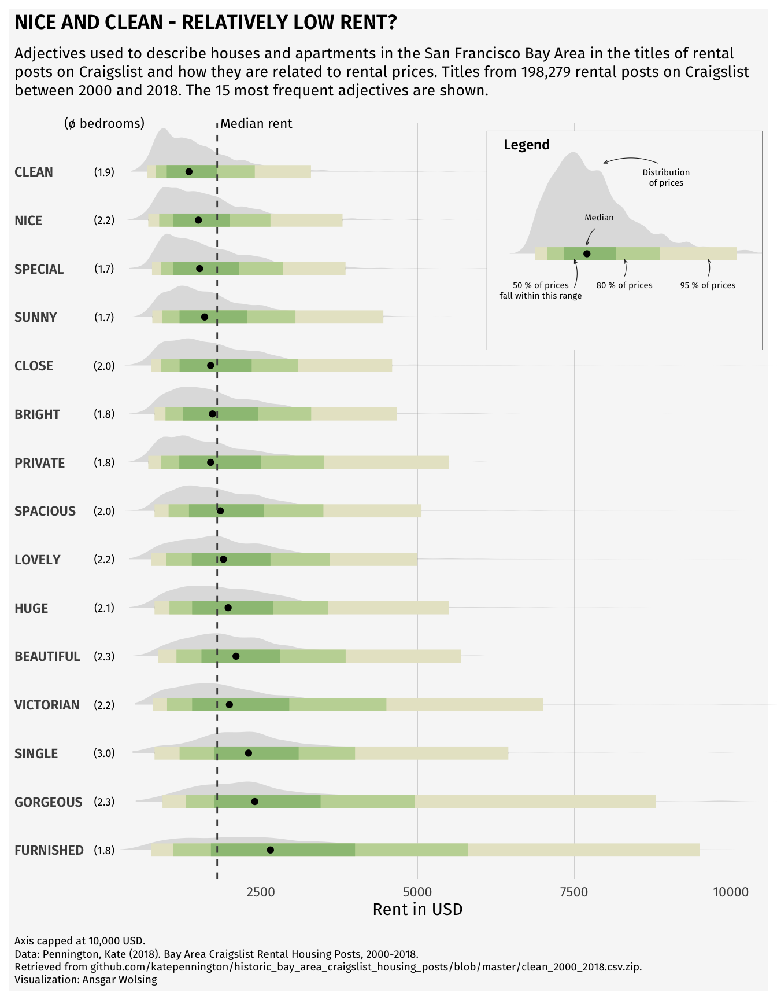
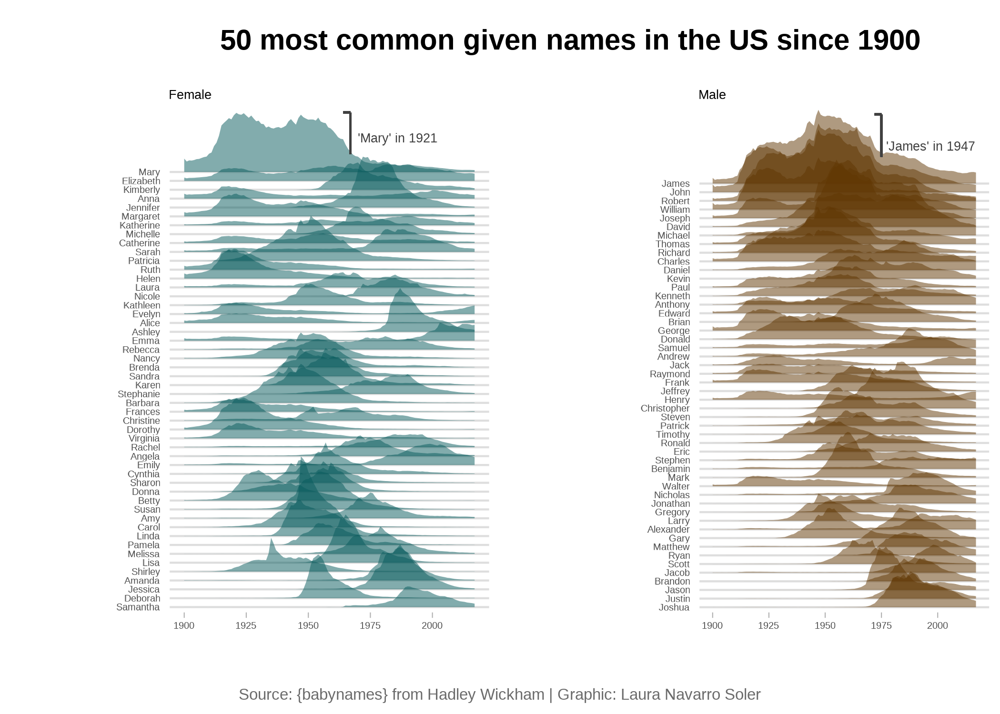

Show/Hide Code
library(tidyverse)
library(ggridges) # 用于创建山峦图
library(ggplot2) # 提供对色盲友好的美观调色板
library(viridis) # 提供色盲友好的渐变色调色板
library(hrbrthemes) # 提供一套简洁、专业外观的 ggplot2 主题主要借助强大且美观的ggridges包来绘制山脊图。山脊图可以更好地展示多个分布的情况。
山脊图（ridgeline chart）本质上是一组密度图（density plots），建议先学习密度图的绘制方法。
library(tidyverse)
library(ggridges) # 用于创建山峦图
library(ggplot2) # 提供对色盲友好的美观调色板
library(viridis) # 提供色盲友好的渐变色调色板
library(hrbrthemes) # 提供一套简洁、专业外观的 ggplot2 主题ggplot(diamonds, aes(x = price, y = cut, fill = cut)) +
geom_density_ridges(alpha = 0.5) +
theme_ridges() + # 适合ridge图的主题
theme(legend.position = "none")
ggplot(diamonds, aes(x = price, y = cut, fill = cut)) +
geom_density_ridges(alpha = 0.5, stat="binline") + # 直方图参数
theme_ridges() + # 适合ridge图的主题
theme(legend.position = "none")
ggplot(lincoln_weather, aes(x = `Mean Temperature [F]`, y = `Month`, fill = ..x..)) +
# 添加一个“渐变密度山峦图”几何对象层
# - geom_density_ridges_gradient() 是 ggridges 包的核心函数
# - `fill = ..x..` 的美学映射在这里生效，使得每个山峦的填充色根据其 x 轴数值（温度）进行渐变
geom_density_ridges_gradient(
# scale = 3: 控制山峦之间重叠的程度。数值越大，重叠越多，图形越紧凑
scale = 3,
# rel_min_height = 0.01: 裁剪每个密度曲线的尾部，移除高度低于最大高度1%的部分，使图形更整洁
rel_min_height = 0.01
) +
# 使用 viridis 调色板来应用填充色
scale_fill_viridis(
# name = "Temp. [F]": 设置颜色图例的标题（尽管后面图例被隐藏了）
name = "Temp. [F]",
# option = "C": 选择 viridis 调色板中的 "C" 方案 (也称为 "plasma")
option = "C"
) +
# 设置图表的标签
labs(title = 'Temperatures in Lincoln NE in 2016') + # 设置主标题
theme_ipsum() +
# 对主题进行微调
theme(
# legend.position="none": 隐藏图例。因为颜色已经直观地反映在x轴上，所以图例不是必需的
legend.position="none",
# panel.spacing: 调整不同面板（即每个月份的图）之间的垂直间距，使其更紧凑
panel.spacing = unit(0.1, "lines"),
# strip.text.x: 调整分面标题在X轴方向的文本属性。
strip.text.y = element_text(size = 8)
)
一种内部有图例和注释的山脊图
以下是生成该图的代码（因为原始数据比较大，在github，所以直接放了生成的图片）：

library(tidyverse) # 数据整理和可视化的核心包集合
library(ggtext) # 增强ggplot2的文本渲染能力
library(ggdist) # 提供高级的分布可视化图层
library(glue) # 方便地将变量嵌入到字符串中
library(patchwork) # 用于组合和排列多个ggplot图表
# 从 github 读取数据文件
rent = read_csv(
"https://raw.githubusercontent.com/ggvisPro/data/refs/heads/main/rent/rent.csv"
) # 包含原始租金信息的CSV文件
rent_title_words = read_csv(
"https://raw.githubusercontent.com/ggvisPro/data/refs/heads/main/rent/rent_title_words.csv"
) # 包含从标题中提取的词语和对应租金的数据
df_plot = read_csv(
"https://raw.githubusercontent.com/ggvisPro/data/refs/heads/main/rent/df_plot.csv"
) # 专门为绘图准备的聚合数据
# --- 数据预处理 ---
# 按平均价格降序排列数据框
df_plot <- df_plot |> arrange(desc(mean_price))
# 将 'word' 列转换为因子类型，并指定其顺序（levels），确保在图表中的显示顺序与排列后的一致
df_plot$word <- factor(df_plot$word, levels = unique(df_plot$word))
# 计算一些将在图表中使用的全局统计量
mean_price <- mean(rent$price, na.rm = TRUE) # 所有房源的平均租金
median_price <- median(rent$price, na.rm = TRUE) # 所有房源的租金中位数
n_rental_posts <- nrow(subset(rent, !is.na(title))) # 有效（标题不为空）的出租帖子总数
# --- 图表美学设置 ---
# 定义图表的背景颜色
bg_color <- "grey97"
# 使用 glue 包创建一个动态的副标题字符串
plot_subtitle = glue(
"Adjectives used to describe houses and apartments in San Francisco Bay Area
Craigslist rental post titles, and their relationship with rent prices. Data is from
{scales::number(n_rental_posts, big.mark = ',')} Craigslist rental posts between 2000 and 2018.
The 15 most frequent adjectives are shown.
"
)
# --- 创建主图表 (p) ---
p <- df_plot |>
ggplot(aes(word, price)) + # 初始化ggplot对象，设置x轴为单词，y轴为价格
# 添加半眼图层（雨云图的核心部分），展示数据分布
stat_halfeye(fill_type = "segments", alpha = 0.3) +
# 添加置信区间图层，默认显示50%, 80%, 95%的区间
stat_interval() +
# 添加一个点来表示每个单词对应的租金中位数
stat_summary(geom = "point", fun = median) +
# 在图表特定位置添加文本，作为平均卧室数的列标题
annotate(
"text",
x = 16,
y = 0,
label = "(Avg. Bedrooms)",
size = 3,
hjust = 0.5
) +
# 为每个单词计算并显示平均卧室数
stat_summary(
aes(y = beds), # 使用 'beds' 列的数据
geom = "text", # 以文本形式显示
fun.data = function(x) {
# 自定义一个函数来计算均值并格式化输出
data.frame(
y = 0, # 将文本放置在y=0的位置
label = sprintf(
"(%s)",
scales::number(
mean(ifelse(x > 0, x, NA), na.rm = TRUE),
accuracy = 0.1
)
)
)
},
size = 2.5
) +
# 添加一条水平虚线，代表所有房源的租金中位数
geom_hline(yintercept = median_price, col = "grey30", lty = "dashed") +
# 为中位数线添加文本标签
annotate(
"text",
x = 16,
y = median_price + 50,
label = "Median Rent",
size = 3,
hjust = 0
) +
# 将x轴的标签（单词）转换为大写
scale_x_discrete(labels = toupper) +
# 设置y轴（价格）的刻度标记
scale_y_continuous(breaks = seq(2500, 20000, 2500)) +
# 手动设置颜色方案，这里假设 MetBrewer 包已安装
scale_color_manual(values = MetBrewer::met.brewer("VanGogh3")) +
# 翻转坐标轴，使条形图水平显示，并设置y轴（翻转后为价格轴）的范围，clip="off"允许绘图超出面板区域
coord_flip(ylim = c(0, 10000), clip = "off") +
# 移除默认的颜色图例
guides(col = "none") +
# 设置图表的标题、副标题、说明文字和坐标轴标签
labs(
title = toupper("Are 'nice' and 'clean' apartments really cheaper?"),
subtitle = plot_subtitle,
caption = "Y-axis capped at $10,000.<br>
Data source: Pennington, Kate (2018).
Bay Area Craigslist Rental Housing Posts, 2000-2018.<br>
From github.com/katepennington/historic_bay_area_craigslist_housing_posts/blob/master/clean_2000_2018.csv.zip.
<br>
Visualization: Ansgar Wolsing",
x = NULL, # 移除x轴标签
y = "Rent (USD)"
) +
# 使用一个简洁的主题
theme_minimal() +
# 对主题进行深度定制
theme(
plot.background = element_rect(color = NA, fill = bg_color), # 设置图表背景
panel.grid = element_blank(), # 移除所有网格线
panel.grid.major.x = element_line(linewidth = 0.1, color = "grey75"), # 添加主x轴网格线（翻转后是水平线）
plot.title = element_text(),
plot.title.position = "plot", # 标题位置与整个图对齐
plot.subtitle = element_textbox_simple(
# 使用ggtext设置副标题，支持自动换行
margin = margin(t = 4, b = 16),
size = 10
),
plot.caption = element_textbox_simple(
# 使用ggtext设置说明文字
margin = margin(t = 12),
size = 7
),
plot.caption.position = "plot", # 说明文字位置与整个图对齐
axis.text.y = element_text(hjust = 0, margin = margin(r = -10)),
plot.margin = margin(4, 4, 4, 4) # 设置图表外边距
)
# --- 创建自定义图例 (p_legend) ---
# 为图例创建一个小的数据框，只使用 "beautiful" 这个词的数据作为示例
df_for_legend <- rent_title_words |>
filter(word == "beautiful")
# 创建一个独立的ggplot对象作为图例
p_legend <- df_for_legend |>
ggplot(aes(word, price)) +
# 同样添加半眼图、区间图和中位数点，作为图例的示例图形
stat_halfeye(fill_type = "segments", alpha = 0.3) +
stat_interval() +
stat_summary(geom = "point", fun = median) +
# 添加富文本注释，解释图表的各个部分
annotate(
"richtext",
x = c(0.8, 0.8, 0.8, 1.4, 1.8),
y = c(1000, 5000, 3000, 2400, 4000),
label = c(
"50% of prices<br>fall in this range",
"95% of prices",
"80% of prices",
"Median",
"Distribution<br>of prices"
),
fill = NA,
label.size = 0,
size = 2,
vjust = 1,
) +
# 添加曲线箭头，将文本注释指向图形的相应部分
geom_curve(
data = data.frame(
x = c(0.7, 0.80, 0.80, 1.225, 1.8),
xend = c(0.95, 0.95, 0.95, 1.075, 1.8),
y = c(1800, 5000, 3000, 2300, 3800),
yend = c(1800, 5000, 3000, 2100, 2500)
),
aes(x = x, xend = xend, y = y, yend = yend),
stat = "unique",
curvature = 0.2,
linewidth = 0.2,
color = "grey12",
arrow = arrow(angle = 20, length = unit(1, "mm"))
) +
# 设置与主图一致的颜色方案
scale_color_manual(values = MetBrewer::met.brewer("VanGogh3")) +
# 翻转坐标轴，并精心调整坐标轴范围以适应图例内容
coord_flip(xlim = c(0.75, 1.3), ylim = c(0, 6000), expand = TRUE) +
# 移除图例
guides(color = "none") +
# 添加图例的标题
labs(title = "Legend") +
# 使用空白主题，移除所有坐标轴、背景等元素
theme_void() +
# 对图例进行主题微调
theme(
plot.title = element_text(size = 9, hjust = 0.075),
plot.background = element_rect(
color = "grey30",
linewidth = 0.2,
fill = bg_color
)
) # 为图例添加边框和背景色
# --- 组合图表 ---
# 使用 patchwork 包的 inset_element() 函数，将自定义图例 (p_legend) 嵌入到主图表 (p) 的指定位置
# l, r, t, b 分别代表左、右、上、下的边界，数值是相对于主图绘图区域的比例
p + inset_element(p_legend, l = 0.6, r = 1.0, t = 0.99, b = 0.7, clip = FALSE)山水画一般的山脊图,可视化1900年以来美国最受欢迎的50个男女姓名

以下是生成该图的代码：
# 步骤 1: 加载所需的库
# ------------------------------------------------
# 注意：所有与自定义字体相关的库 (extrafont, showtext) 均已移除。
library(tidyverse) # 用于数据处理 (dplyr) 和绘图 (ggplot2) 的核心包集合
library(ggridges) # 用于创建山脊图 (geom_ridgeline)
library(cowplot) # 用于组合多个 ggplot 图表
# 步骤 2: 数据加载和准备
# ------------------------------------------------
# 加载 babynames 数据集，它包含了美国自1880年以来的婴儿姓名数据
babynames <- babynames::babynames
# 筛选出历史上总出生数最多的 50 个女性名字
top_female <- babynames |>
filter(sex == "F") |> # 1. 筛选性别为女性的数据
group_by(name) |> # 2. 按名字进行分组
summarise(total = sum(n)) |> # 3. 计算每个名字在所有年份的总出生数
slice_max(total, n = 50) |> # 4. 提取总数排名前50的名字
mutate(
name = forcats::fct_reorder(name, -total) # 5. 将名字转换为因子，并根据总数降序排列
) |>
pull(name) # 6. 提取出排好序的名字向量，作为后续排序的基准
# 筛选出历史上总出生数最多的 50 个男性名字 (逻辑同上)
top_male <- babynames |>
filter(sex == "M") |>
group_by(name) |>
summarise(total = sum(n)) |>
slice_max(total, n = 50) |>
mutate(
name = forcats::fct_reorder(name, -total)
) |>
pull(name)
# 准备用于绘制山脊图的女性名字数据
female_names <- babynames |>
filter(
sex == "F",
name %in% top_female # 1. 只保留属于前50热门列表中的名字
) |>
# 2. 将name列转换为因子，并指定其顺序与top_female一致，确保Y轴按总排名显示
mutate(name = factor(name, levels = levels(top_female))) |>
group_by(year, name) |> # 3. 按年份和名字分组
summarise(n = sum(n)) # 4. 聚合数据
# 准备用于绘制山脊图的男性名字数据 (逻辑同上)
male_names <- babynames |>
filter(
sex == "M",
name %in% top_male
) |>
mutate(name = factor(name, levels = levels(top_male))) |>
group_by(year, name) |>
summarise(n = sum(n))
# 步骤 3: 创建独立的图表
# ------------------------------------------------
########### 女性名字山脊图 (plot1) ###########
plot1 <- ggplot(female_names, aes(x = year, y = fct_reorder(name, n), height = n / 50000, group = name)) +
geom_ridgeline(
alpha = 0.5, scale = 4.5, linewidth = 0,
fill = "#05595B", color = "white"
) +
xlim(1900, NA) +
labs(title = "Female", y = "", x = "") +
theme_light() + # 应用一个明亮的主题
theme(
# 注意：所有 'family' 参数已被移除，将使用系统默认字体
plot.title = element_text(hjust = 0, size = 15),
axis.ticks.y = element_blank(),
axis.text = element_text(size = 8),
panel.grid.major.x = element_blank(),
panel.grid.minor.x = element_blank(),
panel.grid.major.y = element_line(linewidth = 0.5),
panel.border = element_blank()
) +
geom_segment(aes(x = 1967, xend = 1967, y = 56.7, yend = 52), color = "#404040") +
geom_segment(aes(x = 1967, xend = 1964, y = 56.7, yend = 56.7), color = "#404040") +
annotate(
geom = "text", x = 1970, y = 54, label = "73,982 babies called\n'Mary' in 1921", hjust = "left",
size = 3, color = "#404040" # 'family' 参数已移除
)
######### 男性名字山脊图 (plot2) #########
plot2 <- ggplot(male_names, aes(x = year, y = fct_reorder(name, n), height = n / 50000, group = name)) +
geom_ridgeline(
alpha = 0.5, scale = 4.5, linewidth = 0,
fill = "#603601", color = "white"
) +
xlim(1900, NA) +
labs(title = "Male", y = "", x = "") +
theme_light() +
theme(
# 注意：所有 'family' 参数已被移除
plot.title = element_text(hjust = 0, size = 15),
axis.ticks.y = element_blank(),
axis.text = element_text(size = 8),
panel.grid.major.x = element_blank(),
panel.grid.minor.x = element_blank(),
panel.grid.major.y = element_line(linewidth = 0.5),
panel.border = element_blank(),
panel.background = element_rect(fill = "white"),
plot.background = element_rect(fill = "white")
) +
geom_segment(aes(x = 1975, xend = 1975, y = 58, yend = 53.1), color = "#404040") +
geom_segment(aes(x = 1975, xend = 1972, y = 58, yend = 58), color = "#404040") +
annotate(
geom = "text", x = 1977, y = 54, label = "94,756 babies called\n'James' in 1947", hjust = "left",
size = 3, color = "#404040" # 'family' 参数已移除
)
# 步骤 4: 组合图表并添加标题和说明
# ------------------------------------------------
# 使用 cowplot 创建一个独立的总标题
title_theme <- ggdraw() +
draw_label("50 most common given names in the US since 1900",
fontface = "bold",
size = 15,
hjust = 0.4 # 'fontfamily' 参数已移除
)
# 使用 cowplot 创建一个独立的图表说明/来源信息
caption <- ggdraw() +
draw_label("Source: {babynames} from Hadley Wickham | Graphic: Laura Navarro Soler",
size = 15,
hjust = 0.5,
color = "#6B6B6B" # 'fontfamily' 参数已移除
)
# 将两个山脊图水平并排组合
gridofplots <- plot_grid(plot1, plot2, nrow = 1)
# 将标题、组合图、图表说明垂直堆叠成最终的成品图
plot_grid(title_theme,
gridofplots,
caption,
ncol = 1, # 最终所有组件排成一列
rel_heights = c(0.2, 1.5, 0.1) # 分别指定标题、图、说明的相对高度
)